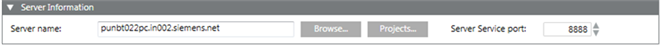
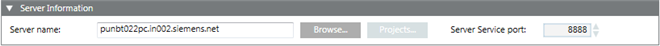
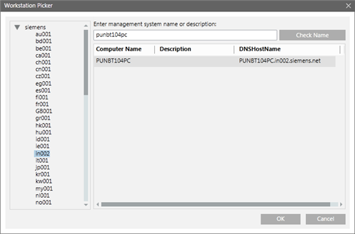
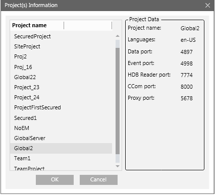

Server Information Expander
The Server Information expander allows you to configure the Server details, including the Server name, the project that you want to connect to on the server, and the Service port on the server.


Item | Description |
Server name | Allows you to type in the name of the server or browse for it by using the Workstation Picker dialog box. |
Server Service port | Enabled only in Automatic mode. Allows you to configure the server Service port number. You can also use the spin control buttons to increase or decrease the number to match the Service port number of the Server project. |
Workstation Picker Dialog Box
The Workstation Picker dialog box allows you to select a server from the accessible networks, in the domain.
This dialog box displays when you click the Browse button alongside the Server Name field in Automatic configuration or Manual configuration mode.
In the Enter management system name or description field, you can type in the full computer name of the server, if you already know it, or you can type a partial text string. Click Check Name to display a list of all workstations in the selected domain whose name contains the entered string.

The Workstation Picker dialog box consists of the following elements:
Workstation Picker Dialog Box — Domain | |
Name | Description |
Domains Tree View | A tree view that contains all available network domains. You can select the domain where the station is located. |
Check Name | Enter the station name in the Check Name field. Once the domain is selected, the list of matching stations will display in the Filtered workstation list. |
Filtered workstation | List view that displays the list of all the stations matching the search criteria for the selected domain. |
Projects Information Dialog Box
This dialog box only displays in Automatic configuration mode, that is, when you select a Server and click Projects.
The Projects Information dialog box allows you to select a project from a list of all available projects on the selected Server including the Stand-alone and Unsecured projects. The list does not include the outdated projects on the Server.

If you choose a Stand-alone Server project, no communication is possible between the Server project and Client/FEP project. For an Unsecured Server project, the communication is Unsecured (without certificates) and hence not recommended.